Como ver o que saiu em cada período, montar a lista de compras do CEASA, comparar as
variações de um produto (quilo, saca, caixa) nas tabelas de preço, lançar o custo quando ainda não há nota fiscal
e acompanhar quem está devendo.
Versão de 22/11/2026. Os prints usam dados fictícios de demonstração.
Conteúdo
Onde fica a nova tela
Consolidado do período: o que saiu
Sugestão de compra e lista em PDF/planilha
Variações e preços por tabela
Atualizar o custo de um produto
Atualizar vários custos de uma vez (CEASA sem nota)
Débitos de clientes
Outras melhorias: busca sem acento, unidade saca e lucro correto
Perguntas frequentes
1. Onde fica a nova tela
Entre no OrderFlow normalmente.
No painel inicial, clique no cartão Planejamento de Compras (destacado no print abaixo).
A tela abre com três abas: Consolidado do período, Variações e preços e Atualizar custos.
À direita fica sempre o quadro Débitos de clientes.
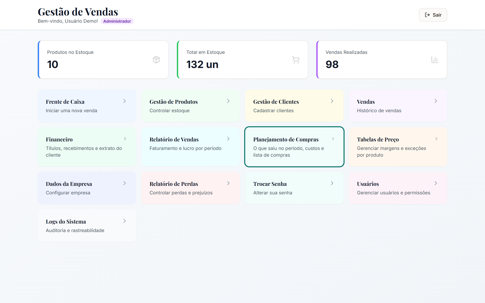
Painel inicial com o novo cartão "Planejamento de Compras".
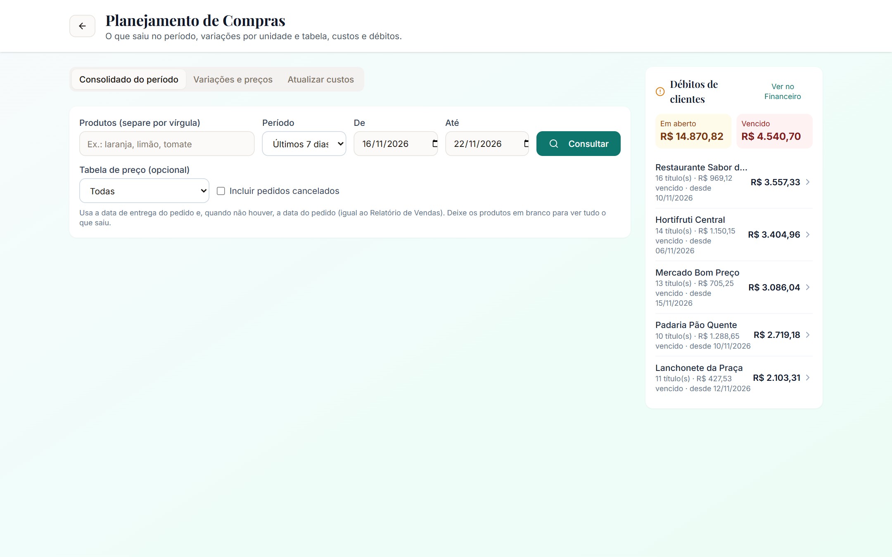
Tela de Planejamento de Compras ao abrir.
2. Consolidado do período: o que saiu
Mostra a soma de tudo o que saiu nos pedidos de um período, produto por produto, separado por unidade.
Em Produtos, digite um ou mais nomes separados por vírgula. Exemplo: laranja, limão.
Para ver todos os produtos, deixe em branco.
Em Período, escolha um atalho (Últimos 7 dias, 15 dias, 30 dias, Mês atual)
ou digite as datas em De e Até.
Se quiser, filtre por uma Tabela de preço (ex.: só pedidos de Restaurantes) ou marque
Incluir pedidos cancelados.
Clique em Consultar.
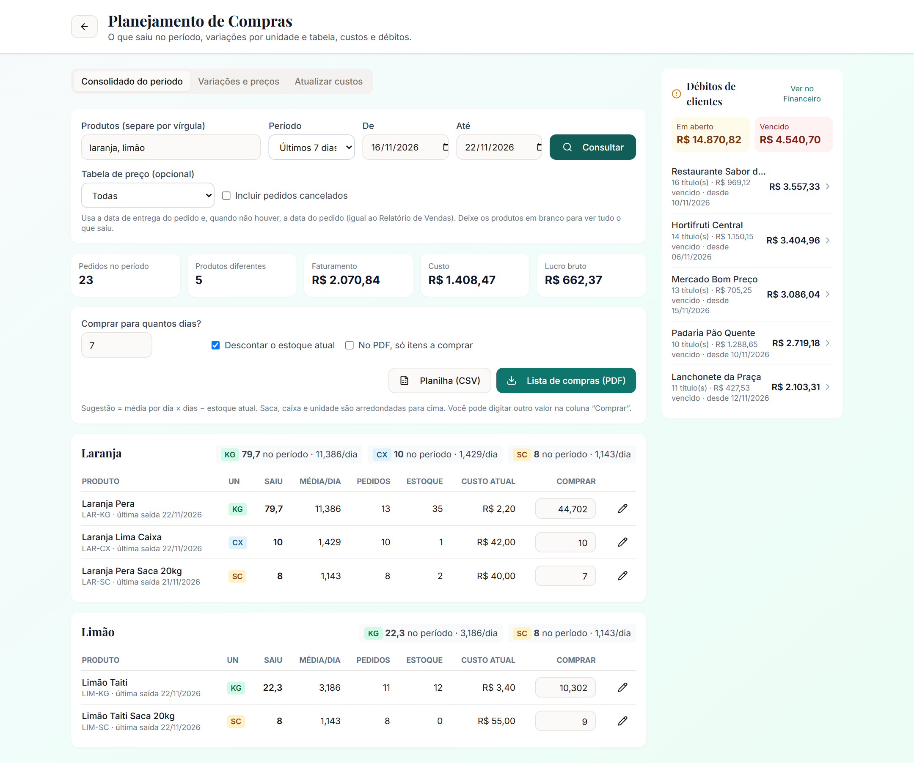
Consolidado de "laranja, limão" nos últimos 7 dias.
Como ler o resultado
Indicadores no topo: quantidade de pedidos, produtos diferentes, faturamento, custo e lucro bruto do período.
Um quadro por produto pesquisado (Laranja, Limão...). No título aparecem os totais por unidade:
por exemplo, KG 79,7 · CX 10 · SC 8. Quilo, caixa e saca nunca são somados entre si.
Colunas da tabela:
Coluna
Significado
Saiu
Quantidade total vendida no período.
Média/dia
Saiu ÷ número de dias do período.
Pedidos
Em quantos pedidos o produto apareceu.
Estoque
Estoque atual cadastrado.
Custo atual
Preço de custo cadastrado hoje.
Comprar
Sugestão de compra, que você pode alterar (ver capítulo 3).
✏️ (lápis)
Atualizar o custo desse produto (ver capítulo 5).
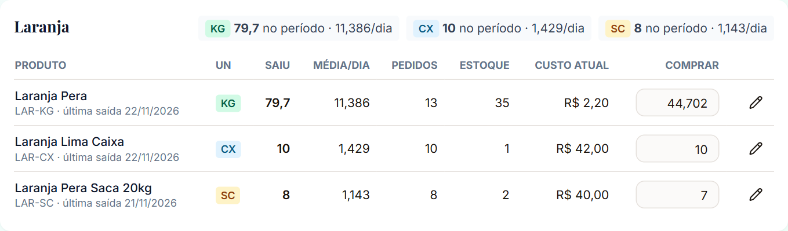
Detalhe do grupo Laranja: quilo, caixa e saca separados.
Qual data é usada? A mesma regra do Relatório de Vendas: a data de entrega do pedido
e, quando não houver, a data em que o pedido foi feito. Pedidos excluídos nunca entram; cancelados só entram se
você marcar a opção.
Deixando o campo de produtos em branco, a tela agrupa pela primeira palavra do nome (todas as "Laranja ..." juntas,
todas as "Batata ..." juntas):
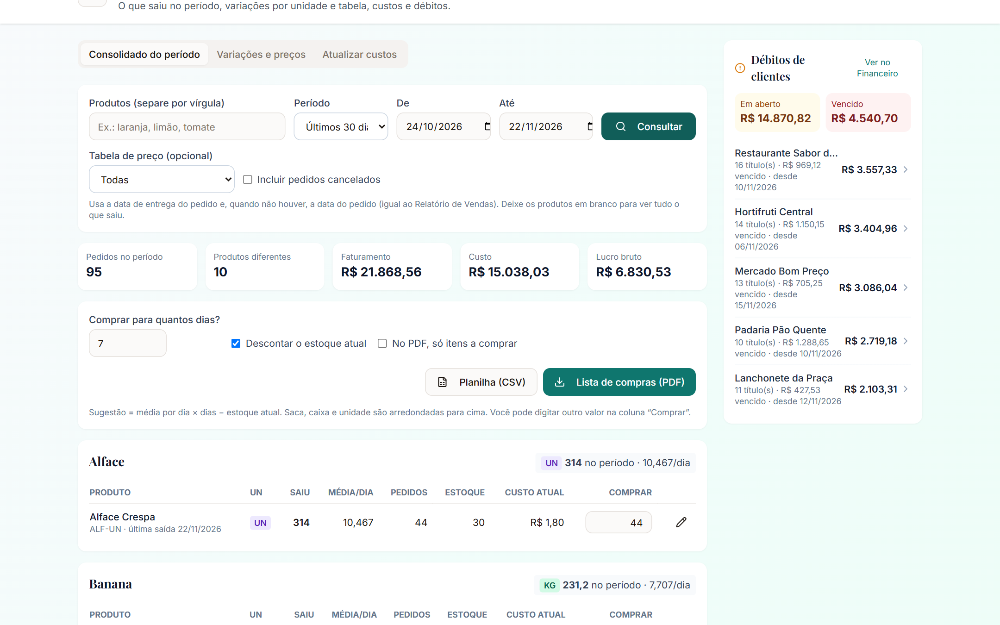
Todos os produtos dos últimos 30 dias.
3. Sugestão de compra e lista em PDF/planilha
Depois de consultar, informe em Comprar para quantos dias? o tempo até a próxima compra (ex.: 7).
Deixe marcado Descontar o estoque atual para a sugestão abater o que você já tem.
A coluna Comprar é calculada assim: média por dia × dias − estoque.
Saca, caixa e unidade são arredondadas para cima (não existe meia caixa); quilo fica com casas decimais.
Se quiser outra quantidade, digite direto na coluna Comprar. O valor digitado vale para o PDF e a planilha.
Clique em Lista de compras (PDF) para levar ao CEASA, ou em Planilha (CSV) para abrir no Excel.
Marque No PDF, só itens a comprar para esconder os itens com sugestão zero.
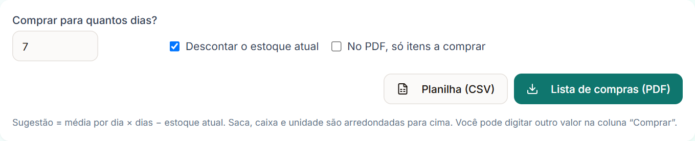
Opções da sugestão e botões de exportação.
Junto com este manual há um exemplo dos dois arquivos: exemplo-lista-compras.pdf e
exemplo-lista-compras.csv. A planilha usa ponto e vírgula e abre direto no Excel em português.
Os ajustes digitados na coluna Comprar não ficam salvos no sistema. Se você consultar de
novo, a sugestão volta ao cálculo automático. Gere o PDF antes de mudar os filtros.
4. Variações e preços por tabela
Mostra todas as versões cadastradas de um produto (quilo, saca, caixa, unidade) e quanto cada uma custa em
cada tabela de preço ativa. Use para conferir preços antes de passar um orçamento.
Clique na aba Variações e preços.
Digite os produtos separados por vírgula (ex.: laranja, limão, tomate) e clique em Buscar.
Cada quadro mostra quantos produtos existem por unidade e o estoque somado de cada unidade.
As colunas com o nome das tabelas (Atacado, Restaurantes, Varejo...) mostram o preço de venda calculado a
partir do custo atual.
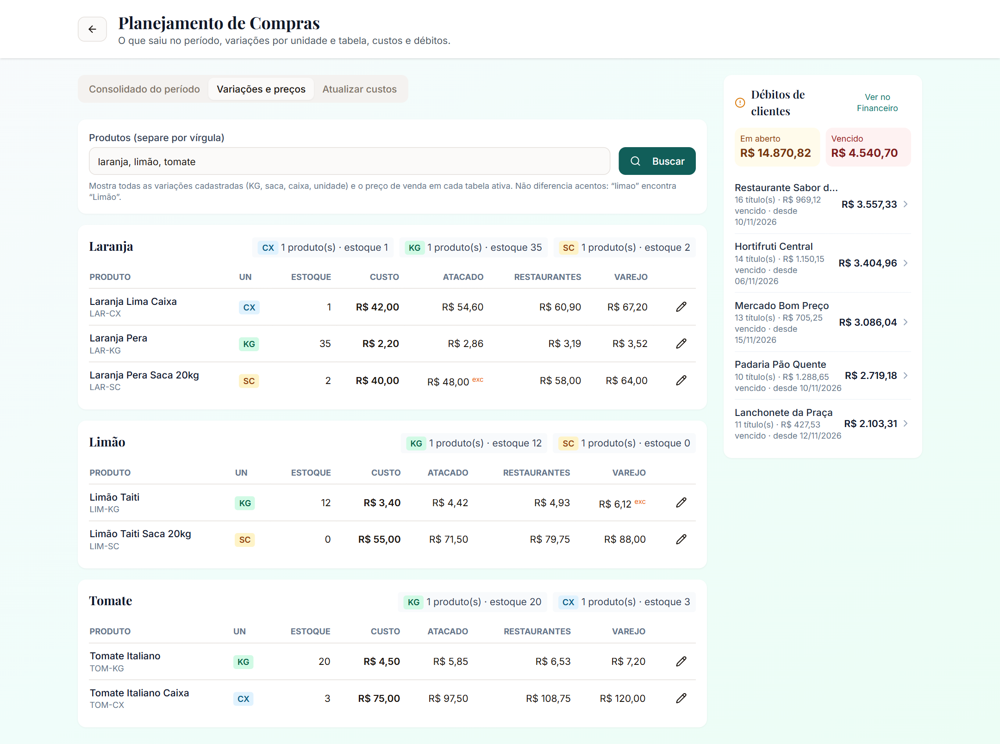
Variações de laranja, limão e tomate com o preço em cada tabela.
A marca exc ao lado de um preço indica que aquele produto tem uma margem própria
(exceção) naquela tabela. Sem a marca, vale a margem geral da tabela. Passe o mouse sobre o preço para ver a margem.
5. Atualizar o custo de um produto
Use quando o preço de compra mudou e você ainda não tem a nota fiscal.
Em qualquer tabela da tela, clique no lápis ✏️ da linha do produto.
Digite o Novo custo por unidade do produto (ex.: por quilo, por saca). Aceita 3,50 ou 3.50.
Escolha a Origem: CEASA / sem nota, Ajuste manual ou Nota fiscal.
Se quiser, escreva uma Observação (ex.: "Box 12, nota chega sexta").
Clique em Salvar custo.
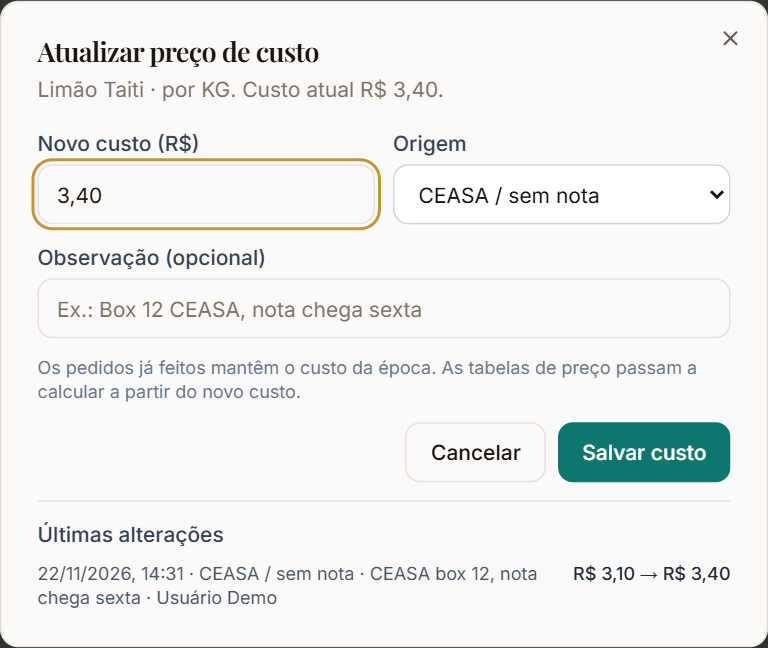
Janela de atualização de custo com o histórico.
Na parte de baixo da janela aparecem as últimas alterações: data, origem, observação, quem alterou e
o valor de/para.
Toda alteração também fica registrada em Logs do Sistema (auditoria).
Alterar o custo pela tela de Produtos (botão editar) também grava o histórico, com origem "Ajuste manual".
O que muda ao trocar o custo: os preços das tabelas (e do PDV) passam a ser calculados com o
custo novo. Os pedidos já feitos não mudam: o lucro deles continua calculado com o custo do dia da venda
(ver capítulo 8).
6. Atualizar vários custos de uma vez (CEASA sem nota)
Ideal para usar ao voltar do CEASA: você lança o custo de todos os itens comprados de uma só vez.
Clique na aba Atualizar custos.
Digite os produtos (ex.: laranja, limão) e clique em Buscar produtos.
Na coluna Novo custo (R$), preencha só os produtos que mudaram. Os que ficarem em branco não são alterados.
Escolha a Origem (o padrão é CEASA / sem nota) e, se quiser, uma Observação, que vale para todos.
Clique em Salvar custo(s). O botão mostra quantos serão salvos.
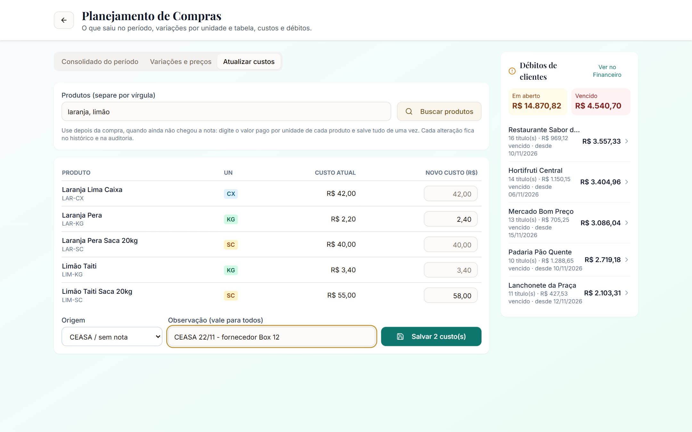
Dois custos preenchidos, prontos para salvar.
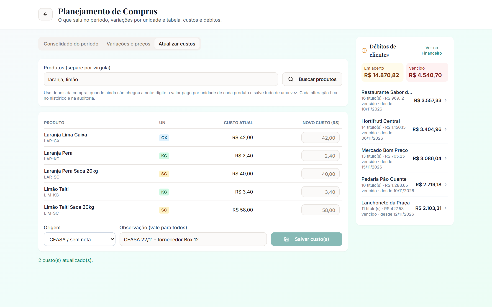
Confirmação após salvar.
Se algum valor estiver inválido, o campo fica com borda vermelha e o botão de salvar é bloqueado.
O salvamento é "tudo ou nada": se der erro em um produto, nenhum é alterado.
7. Débitos de clientes
O quadro à direita lembra quem está devendo enquanto você planeja a compra.
Em aberto: soma do saldo de todos os pedidos não pagos (cancelados não contam).
Vencido: a parte desse saldo com vencimento já passado.
Abaixo, os 5 clientes que mais devem, com a quantidade de títulos, quanto está vencido e o vencimento mais antigo.
Clique no nome de um cliente para abrir o extrato dele (o mesmo da tela Financeiro), com opção de PDF e WhatsApp.
Para registrar um pagamento, clique em Ver no Financeiro.
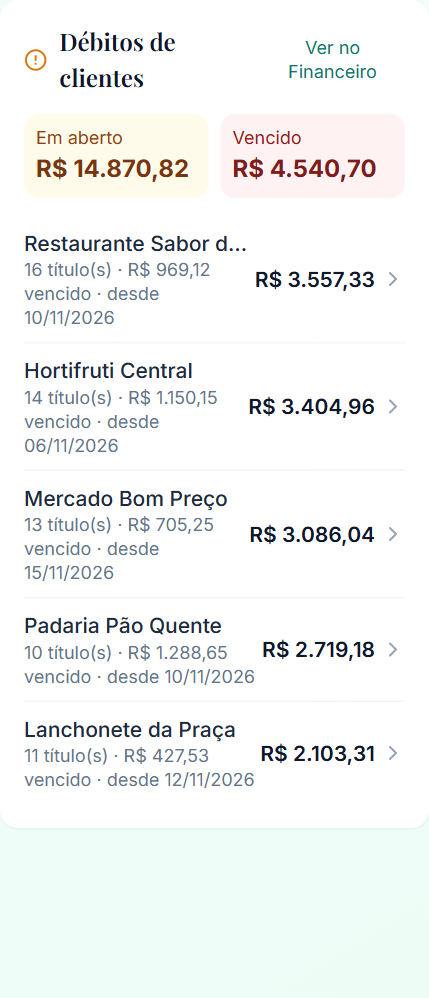
Quadro de débitos de clientes.
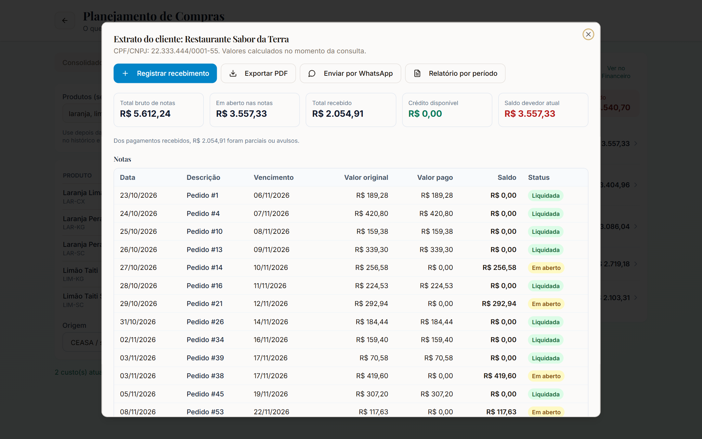
Extrato do cliente aberto a partir do quadro.
8. Outras melhorias
Busca de produtos sem acento
Em Gestão de Produtos (e em todas as telas que buscam produtos), maiúsculas e acentos não importam mais:
limao encontra "Limão", maca encontra "Maçã". Os nomes que começam com o que você
digitou aparecem primeiro.
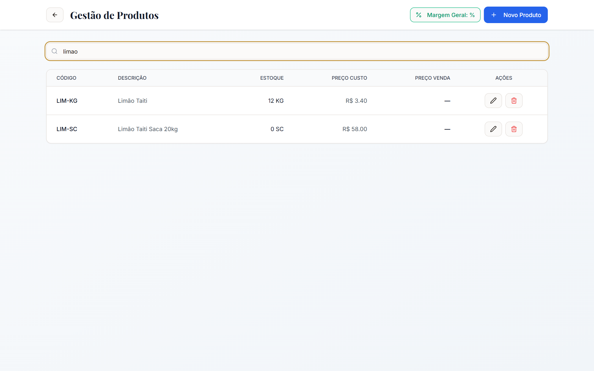
Busca "limao" encontrando "Limão".
Unidade saca (SC)
O cadastro de produtos tem a opção SC (saca). Ao importar notas e pedidos na sugestão de tabela de preço,
as palavras "saca", "sacas", "saco" e "sacos" passam a ser entendidas como SC, e não mais como unidade.
Lucro correto mesmo depois de mudar o custo
Cada pedido novo passa a guardar o custo do produto no dia da venda. Assim, o lucro mostrado no
Relatório de Vendas e no consolidado não muda quando você atualiza o custo depois.
Exemplo
Antes
Agora
Dia 01: vende 10 kg de limão a R$ 5,00 com custo R$ 3,00
Lucro R$ 20,00
Lucro R$ 20,00
Dia 10: custo sobe para R$ 4,50 e você reabre o relatório do dia 01
Lucro passava a R$ 5,00 ❌
Continua R$ 20,00 ✅
Ao editar um pedido, os produtos que já estavam nele mantêm o custo original; produtos novos entram com o custo do dia.
Pedidos feitos antes desta atualização não têm o custo guardado e continuam usando o custo atual, como antes.
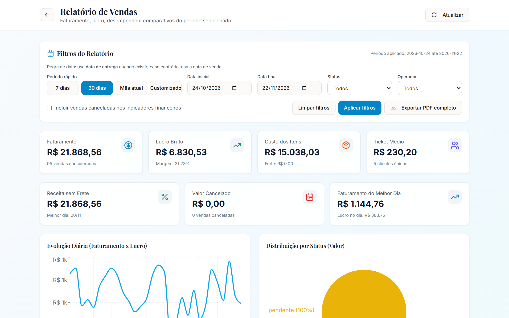
Relatório de Vendas: o custo e o lucro passam a usar o custo do dia da venda.
9. Perguntas frequentes
Por que quilo e saca aparecem separados?
Porque o sistema não sabe quantos quilos tem cada saca de cada produto (laranja e batata têm pesos diferentes).
Somar os dois daria um número errado. Por isso os totais vêm sempre por unidade.
O consolidado bate com o Relatório de Vendas?
Sim, desde que use o mesmo período e o mesmo tratamento de cancelados: os dois usam a data de entrega
(ou a data do pedido, quando não há entrega).
Até quantos dias posso consultar?
Até 366 dias por consulta, e até 10 produtos separados por vírgula.
Lancei o custo errado. Como desfaço?
Lance de novo o valor correto. O histórico guarda as duas alterações, e os pedidos feitos nesse meio tempo ficam
com o custo que estava valendo na hora.
Mudar o custo altera os preços de venda?
Sim, para as próximas vendas. As tabelas calculam o preço como custo × (1 + margem), então um custo maior
gera um preço maior. Só nas vendas feitas sem tabela de preço é que um produto com preço de venda fixo
no cadastro continua com o preço fixo.
Quem pode usar a tela?
Todo usuário logado (administrador ou operador), igual à tela de Produtos.